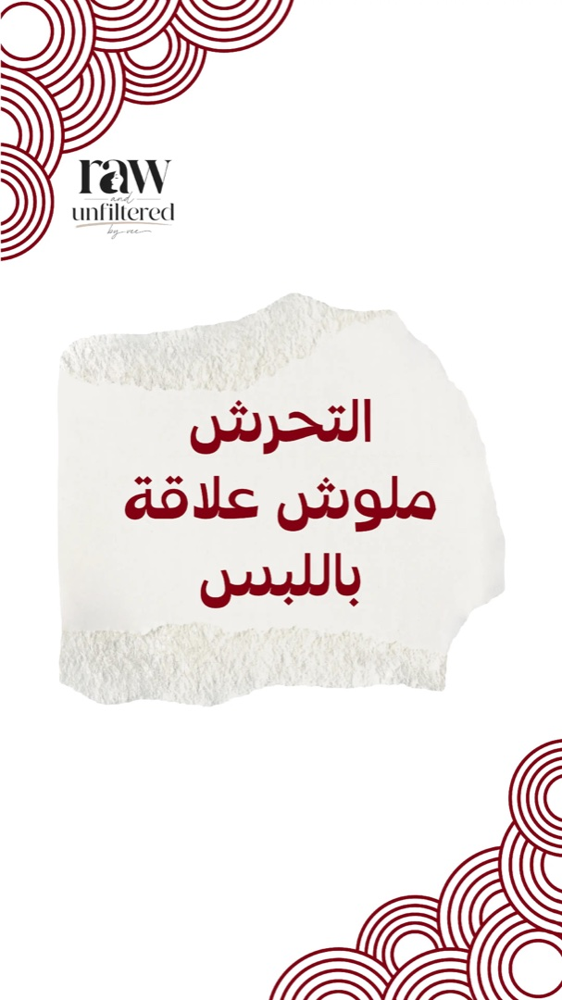
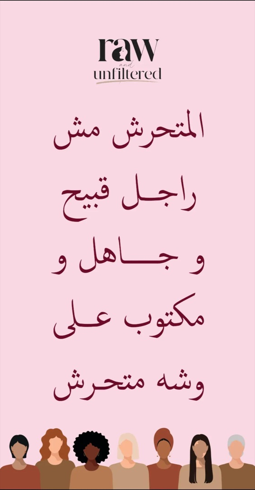
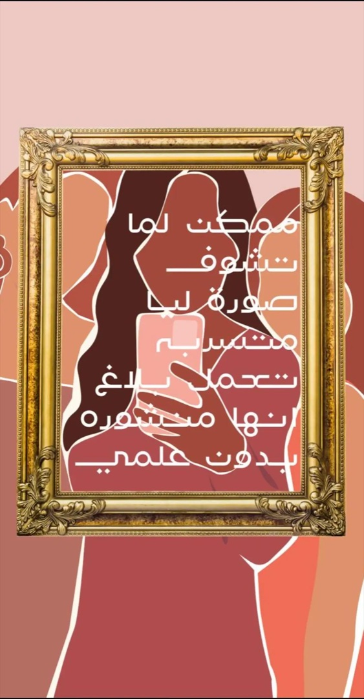
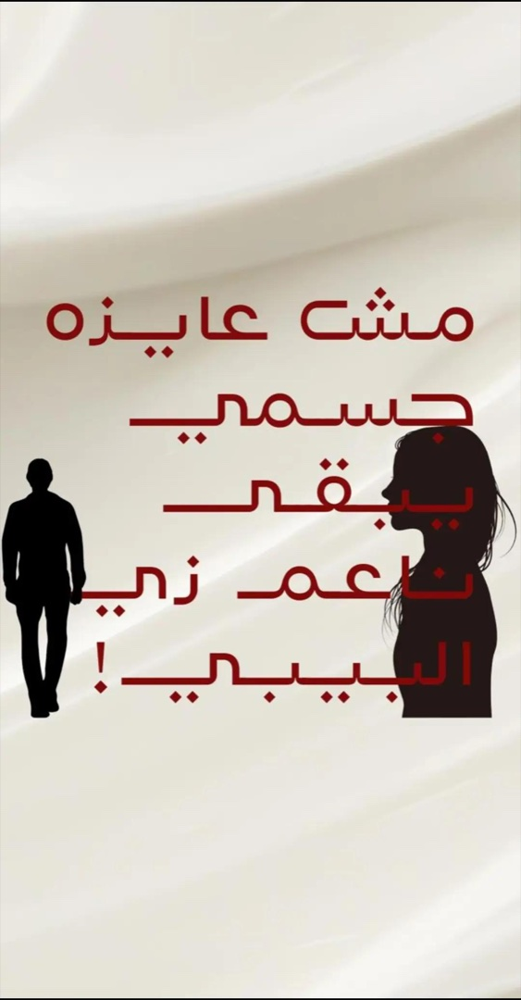
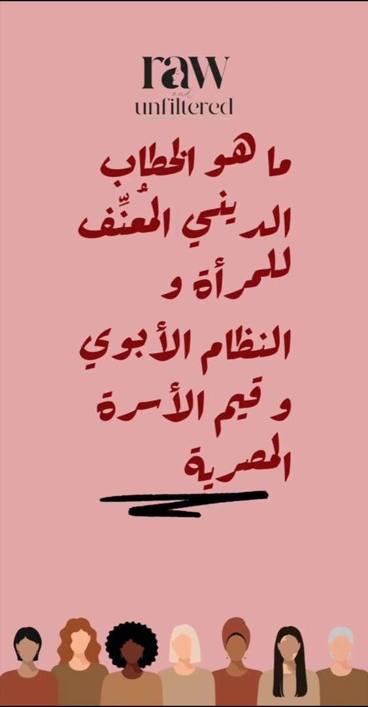
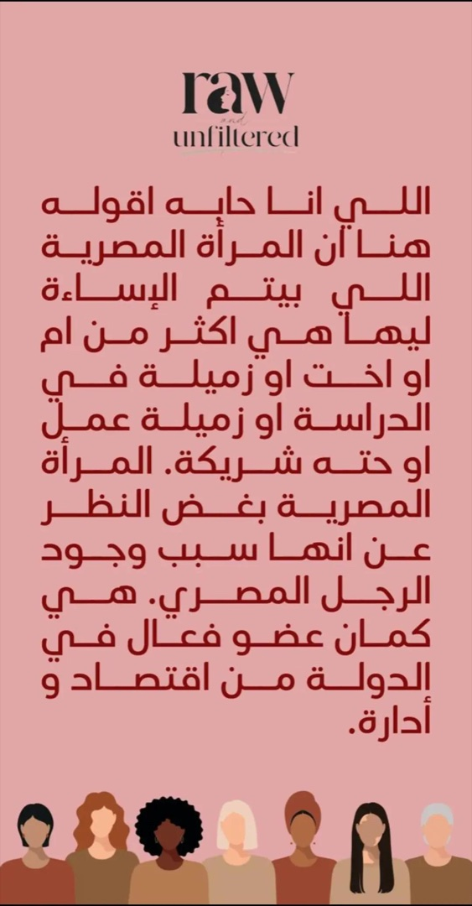
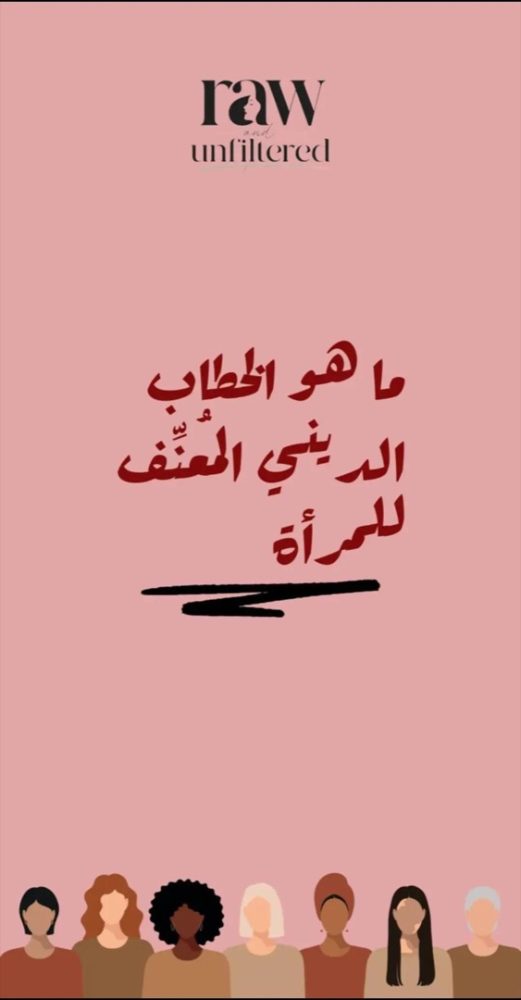
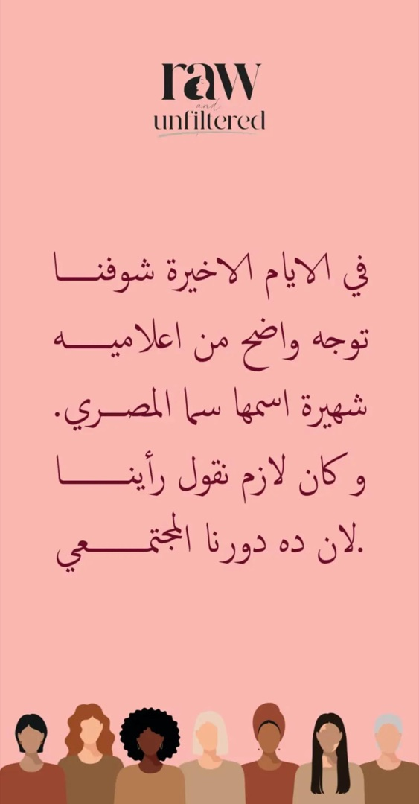
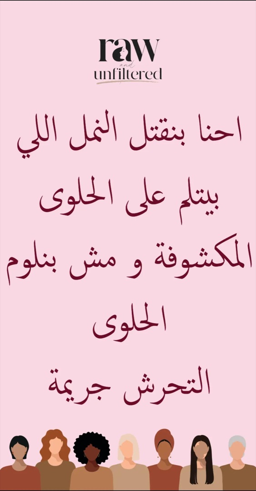

حاسه بديهيات بس معلش
التحرش جريمة حتى لو بعد الساعة ١٢. يوم الخميس مش مبرر، ولا لو مراتك مش باسطاك ده مبرر.
من RAW by Vee إلى من غير إذن. ٣١ منشور أصلي محفوظ بالعربي والإنجليزي.
في الأرشيف ٣١ منشور من RAW by Vee. المنشور رقم ٣٢ هتلاقيه ضمن مقال «مين حط الجندر في شنطة ميكاب؟».
العناوين والنصوص والأغلفة المتاحة وروابط تيك توك محفوظة كما نُشرت؛ التصنيفات للتصفح فقط.

التحرش جريمة حتى لو بعد الساعة ١٢. يوم الخميس مش مبرر، ولا لو مراتك مش باسطاك ده مبرر.

التحرش ملوش علاقة باللبس. تحت العباية حكاية.

المتحرش مش راجل قبيح وجاهل ومكتوب على وشه متحرش.
«اللي عايز يحط مكياج يحط!» البوست نازل تحت عنوان «النظام الأبوي بيحط ليب جلوس»، وبيسأل إزاي المكياج بقى مرتبط بالنوع الاجتماعي.

«حريتي حقي». التصميم بيربط الحرية بالاستقلال، وبيطرح الاتنين كحق للست.

«نفسي أكون حرة». البوست بيتكلم عن رغبة بسيطة: إني أقدر أمشي براحتي في الشارع من غير ما حد يفضل يبص لي.

مش عايزة أكون وسيلة للهروب من جرائم الحرب.

ممكن لما تشوف صورة ليا متسربة تعمل بلاغ إنها منشورة بدون علمي.

مش عايزة جسمي يبقى ناعم زي البيبي!

ما هو الخطاب الديني المعنّف للمرأة، والنظام الأبوي، وقيم الأسرة المصرية؟

اللي أنا حابه أقوله هنا أن المرأة المصرية اللي بيتم الإساءة ليها هي أكتر من أم أو أخت أو زميلة في الدراسة أو زميلة عمل أو حتى شريكة.

«ما هو الخطاب الديني المعنّف للمرأة؟» المنشور بيفتتح سلسلة عن الطريقة اللي ممكن يُستخدم بيها الخطاب الديني لتبرير العنف ضد النساء.
عنوان المنشور: «المؤذي هو الشيطان دايمًا». والسؤال اللي بيطرحه التصميم: ما هو الخطاب الديني المعنّف للمرأة؟

في الأيام الأخيرة شوفنا توجه واضح من إعلامية شهيرة اسمها سما المصري. وكان لازم نقول رأينا، لأن ده دورنا المجتمعي.

«تنويه: محتوى صادم وخادش للحياء وللكبار فقط». البوست بيبدأ بالتنويه ده، والوصف بيقول: «مش لاقيين كلام نقوله يوصف اللي إحنا شايفينه».

إحنا بنقتل النمل اللي بيتلم على الحلوى المكشوفة ومش بنلوم الحلوى. التحرش جريمة.

مفيش بنت بيتم ابتزازها بمزاجها. إحنا هنا مش بنلوم الضحية.
المنشور بينتقد ردود الفعل اللي بتدافع عن لاعبين متهمين بالتحرش، وبيستشهد بكلام محمد صلاح سنة ٢٠١٩ عن الفرص التانية. وبيسأل عن المسؤولية تجاه النساء اللي بيشتكوا من التحرش والعنف الرقمي.
التحرش مش بس في الشارع. التحرش بين الصحاب والمديرين وفي كل مكان.
التحرش مش سببه كبت جنسي. التحرش مش سببه لبس البنت، ولا إن البنت ماشية لوحدها في الشارع، ولا إن البنت مش محجبة.
لو التحرش سببه اللبس يعني إيه يتم التحرش بطفلة؟
المنشور بيسأل ليه بعض الرجالة في مصر بيتصوروا إن من حقهم يتحكموا في الستات. وبيحكي إزاي لوم الضحية، وتبرير الاعتداء، وتطبيع إساءة استخدام السلطة في الشغل بيخلّوا الستات تخاف تتكلم.
«إيه اللي بيحصل في نساء مصر؟» المنشور بيبدأ بالسؤال ده وبيطلب من الناس ما تبطلش مشاركة. السلايدز بتتناول ردود الفعل على اتهامات بالعنف الجنسي وإزاي بيتكرر التشكيك في اللي بيحكوا تجاربهم.
التحرش مش بس في الشارع ولا في السوشيال ميديا.
المنشور بيستخدم عنوان «كارثة على السوشيال ميديا» عشان يسأل عن ازدواجية المعايير: إزاي البوسة بتتوصف إنها جريمة، بينما التحرش والتعدّي والتحريض على الضرب ما بيتعاملوش بنفس الجدية لما الناس بتتكلم باسم «قيم الأسرة المصرية»؟
التحرش مش بس في الشارع ولا في السوشيال ميديا.
المنشور عامل إعلان ساخر عن شغل سكرتير خاص، بيحط شروط عن سن المتقدم وشكله وطوله ووزنه. الإعلان بيقلب الأدوار عشان يوضح إزاي صاحب الشغل ممكن يستخدم سلطته ويحاول يحوّل فرصة العمل لاستغلال جنسي.
ببساطة كونك بريء من الفعل القبيح لا يعني عدم وجود الفعل القبيح. ولكن دفاعك عن فكرة عدم وجود الاغتصاب أو التحرش لمجرد إن حد قالك جملة «أتعتقدان العمليات الجنسية تتم قهرًا على النساء؟» ده يجعلك مذنب زيك زيه.
الخطاب الديني الذكوري خطاب مهين للنساء، لكن الخطاب الديني المتزن منصف للنساء والرجال. التصميم بينتقد تقديم ضرب الست على إنه نصح، وتصوير الست على إنها أقل عقل ودين.
«العنف الرقمي ضد النساء المصرية لحد فين؟» المنشور بيفتح السؤال عن مدى انتشار الأذى اللي بتتعرض له النساء المصريات على الإنترنت.
التحرش جريمة غير مبررة حتى لو لابسة شراب شبك. اعرفي حقك.
مفيش منشورات مطابقة. جرّبي كلمة تانية.
From RAW by Vee to Without Permission: 31 original posts preserved in Arabic and English.
The archive contains 31 RAW by Vee posts. The 32nd original post appears with The Patriarchy Wears Lip Gloss.
Original titles, reading texts, available artwork and TikTok links are preserved. Categories are for discovery.
Harassment is a crime even after midnight. Thursday is no excuse. Neither is being unhappy with your wife.
Harassment has nothing to do with clothes. There’s a story beneath the abaya.
A harasser isn’t always an ugly, ignorant man with the word “harasser” written across his face.
“Anyone who wants to wear makeup can wear it!” The post is titled “The Patriarchy Wears Lip Gloss” and asks how makeup came to be associated with gender.
“My freedom is my right.” The artwork connects freedom with independence and asserts both as a woman’s right.
“I want to be free.” The post puts that wish in everyday terms: being able to walk down the street without someone staring.
I don’t want to be used as a way to evade accountability for war crimes.
If you see a leaked photo of me, please report that it was posted without my knowledge.
I don’t want my body to be as smooth as a baby’s!
What is religious rhetoric that harms women, and how does it relate to patriarchy and Egyptian family values?
What I want to say here is that the Egyptian woman being mistreated is more than a mother, sister, classmate, colleague, or partner.
“What is religious rhetoric that harms women?” The post opens a series about how religious rhetoric can be used to justify violence against women.
The post is captioned “the devil is always an abuser.” The artwork asks: What is religious rhetoric that harms women?
In recent days, we’ve seen a clear stance from a well-known media personality named Sama El Masry. We felt we had to speak up because that’s part of our role in society.
“Content warning: disturbing and explicit material, for adults only.” The caption says, “We can’t find the words for what we’re seeing.”
We kill the ants that gather around uncovered sweets and don’t blame the sweets. Harassment is a crime.
No girl chooses to be blackmailed. We don’t blame the victim here.
The post criticises public defences of players accused of harassment and cites Mohamed Salah’s 2019 comments about second chances. It asks what accountability looks like for women who report harassment and digital violence.
Harassment happens beyond the street. It can happen among friends, with managers, and anywhere else.
Harassment isn’t caused by sexual repression, a girl’s clothes, her walking down the street alone, or her going without a hijab.
If clothing causes harassment, how do you explain a little girl being harassed?
The post asks why some men in Egypt assume they have a right to control women. It discusses how victim-blaming, excuses for assault, and abuse of workplace authority can make women afraid to speak up.
“What’s happening to women in Egypt?” The post opens with that question and asks people to keep sharing. The slides examine reactions to allegations of sexual violence and the recurring disbelief directed at women who speak about their experiences.
Harassment happens beyond the street and social media.
With the headline “A disaster on social media,” the post asks why a kiss is called a crime while harassment, assault, and calls for violence aren’t treated with the same seriousness by people invoking “Egyptian family values.”
Harassment happens beyond the street and social media.
The post uses a satirical job ad for a private secretary that specifies the applicant’s age, looks, height, and weight. By reversing the roles, it shows how an employer can use their position to turn a job opportunity into sexual exploitation.
Simply put, the fact that you didn’t commit a harmful act doesn’t mean it doesn’t happen. If you defend the idea that rape or harassment doesn’t exist just because someone asked whether women are forced into sexual acts, you’re as complicit as they are.
Patriarchal religious rhetoric demeans women, while balanced religious discourse is fair to women and men. The slide criticises presenting violence against women as guidance and portraying women as inferior in reason or faith.
“How far does digital violence against Egyptian women go?” The post raises the question of how widespread online abuse against Egyptian women has become.
Harassment is an unjustifiable crime, even if you’re wearing fishnet stockings. Know your rights.
No matching posts.